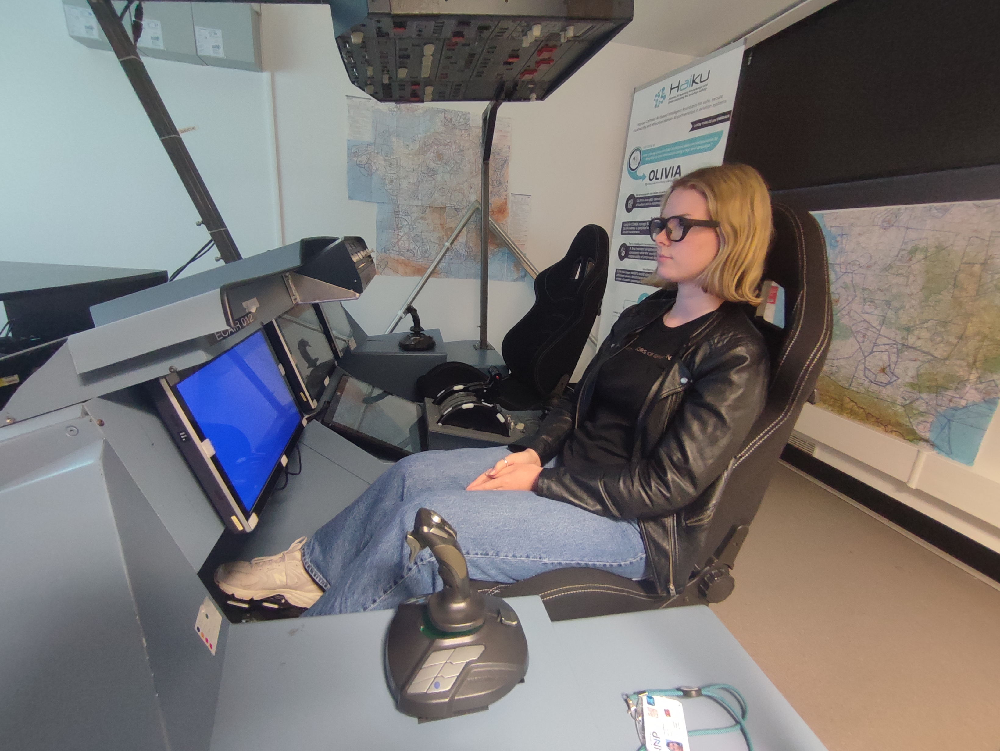
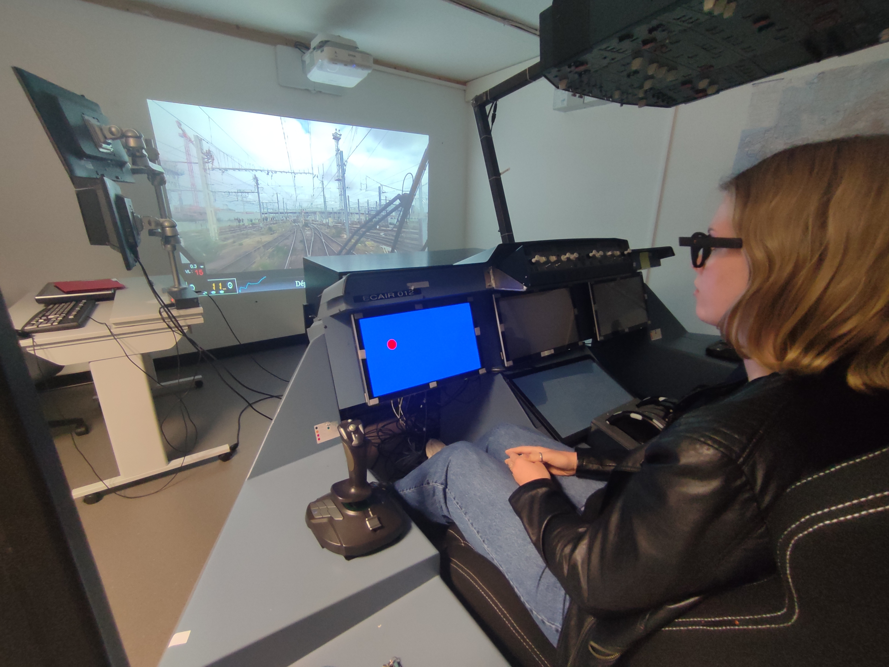
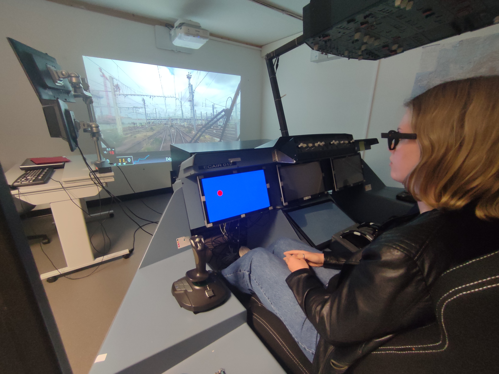
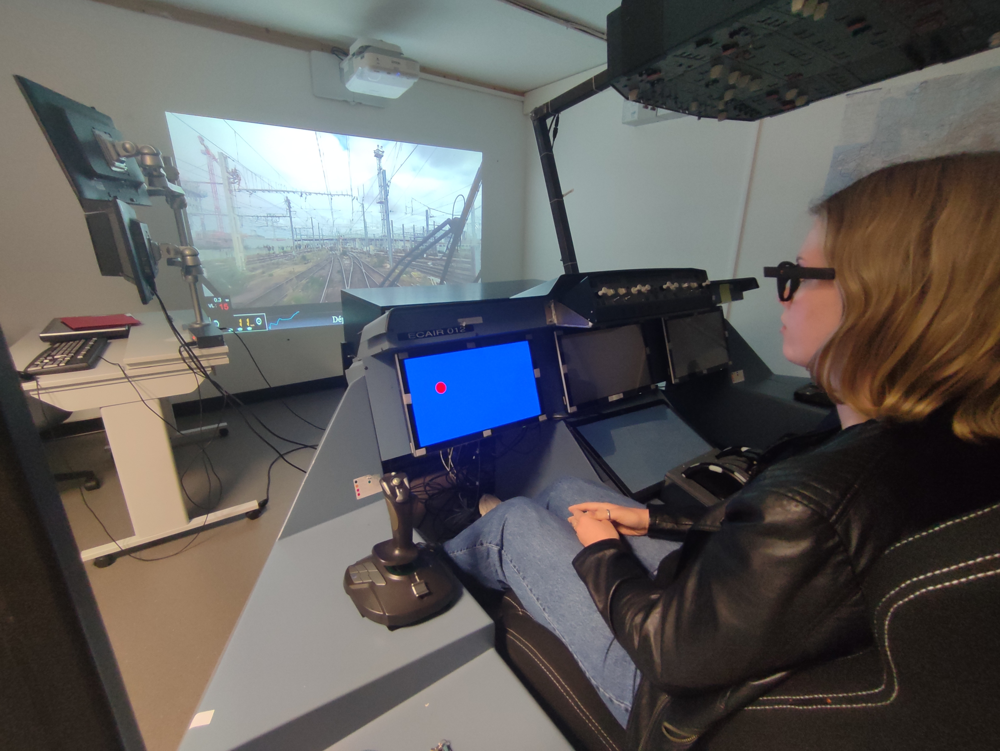

Deuxième partie : Évaluation de la verbalisation
Résumé
Cette étude compare le niveau de vigilance des participants dans deux conditions : une condition neutre sans consigne de verbalisation et une condition avec verbalisation de repères visuels (panneaux de signalisation, passages à niveau, trains croisés) durant le visionnage d’une vidéo de simulation de conduite ferroviaire.
Méthode
Matériel
- Simulateur de poste de conduite (Airbus A320 adapté).
- Affichage vidéo d’un trajet de train via vidéoprojecteur.
- Écran tactile pour mesure du temps de réaction (point rouge).
- Ceintures de fréquence cardiaque et lunettes d’eye-tracking Pupille Labs.
Participants
10 volontaires (hommes et femmes) âgés de 19 à 25 ans.
Protocole expérimental
- Durée de la vidéo : 30 minutes.
- Tests de temps de réaction à T=5 min et T=25 min.
- Condition neutre : simple réaction au stimulus.
- Condition verbalisation : annonce vocale des repères visuels rencontrés.
- Ordre contrebalancé pour chaque participant afin d’éviter effets d’apprentissage.
Variables et hypothèse
- Variables indépendantes : condition (neutre vs verbalisation).
- Variables dépendantes : temps de réaction, fréquence cardiaque, clignements/min.
- Hypothèse : la verbalisation maintient ou améliore le niveau de vigilance, réduisant le temps de réaction et la fréquence de clignements, tout en augmentant la fréquence cardiaque.
Illustrations de l'expérience

 



Ces images montrent le simulateur, l’équipement des participants et la procédure de test.